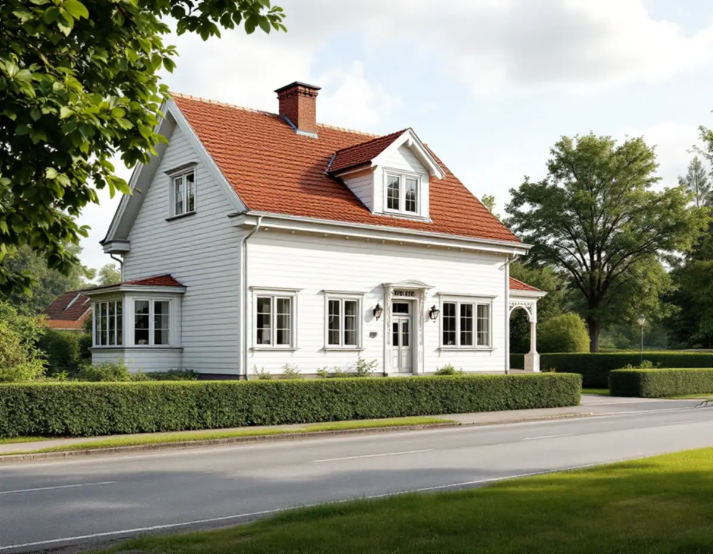
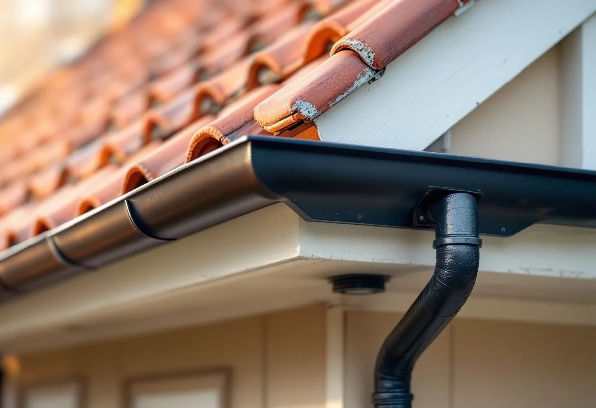

Villastad och klassning
Vi tittar på var i Spånga huset ligger och vad Stadsmuseets karta och detaljplanen säger.
I Spånga ligger villastäderna Solhem, Bromsten, Flysta och Sundby, som blev egna municipalsamhällen mellan 1905 och 1916. I dag står hus från många epoker sida vid sida. En takrenovering i Spånga börjar därför med att se vad som ligger på just ditt hus – och om tomten ligger i Solhem, som staden räknar som kulturhistoriskt värdefull miljö.

Stockholms stads minnesbok om Stor-Stockholms uppkomst räknar upp Spångas municipalsamhällen: Bromsten 1905, Solhem 1909 och Flysta 1916. Järnvägen mellan Spånga, Hässelby och Lövsta öppnade 1889, och när Spånga införlivades med Stockholm 1949 ägde staten 60 procent av socknens areal och staden 26 procent.
Enligt stadens områdesfakta för 2025 fanns det 2 038 bostäder i småhus i Solhem, 1 066 i Bromsten, 663 i Flysta och 559 i Sundby. De allra flesta av småhusen är äganderätter.

Stadens vägledning för småhusområden räknar Bromsten, Solhem, Flysta och Sundby som villastäder. De första stadsplanerna gav slingrande gator efter terrängen och fritt liggande hus på stora tomter. I Solhem fick bara en tiondel av tomten bebyggas. När delar av villastäderna fick nya planer på 1930-talet blev tomterna mindre, 700–1 000 kvadratmeter.
Enligt vägledningen har tomterna i villastäderna sedan dess successivt delats och nya hus byggts på tomter kring 600 kvadratmeter, med radhus, parhus och mindre flerfamiljshus inom och kring den gamla strukturen. Resultatet är en blandning där en villa från 1910-talet kan stå bredvid ett hus från 1980-talet.
Vägledningen beskriver också gaturummet: husen ligger som regel indragna från gatan med en grön förgård, och gatorna kantas av klippta häckar eller staket. Det är vackert men kan göra det trångt när en ställning ska resas och en container ställas upp. Vi föreslår en placering som skonar häckar och träd och som grannarna kan leva med under de veckor arbetet pågår.
För taket betyder det att grannarnas tak sällan säger något om ditt. Vi ser på varje hus för sig: material, lutning, ålder på underlaget och hur senare kupor och tillbyggnader har anslutits.
I stadens översikt över småhusområden är Solhem den enda av de fyra villastäderna som är markerad som kulturhistoriskt värdefull miljö. Det betyder inte att varje hus är klassat, men att ändringar i området behöver visa hänsyn till de värdena.
Stadens råd för villastäderna är att ta tillvara eller återskapa karaktärsskapande material, kulörer, byggnadsdelar och detaljer vid ombyggnad och renovering, och att utgå från husens volym, proportioner och takform. För ett äldre hus i Solhem innebär det oftast att taket läggs om med samma material och att kupor, takfot och skorsten behåller sin form.
Är du osäker på vad som gäller för ditt hus, börja med Stadsmuseets klassificeringskarta. Är huset markerat med blått eller grönt gäller utökad lovplikt.
Sedan den 1 december 2025 är det normalt lovfritt att byta takmaterial eller kulör på ett en- eller tvåbostadshus, enligt Boverket. Undantagen är hus som är särskilt värdefulla, områden med skyddsbestämmelser i detaljplan och områden med utökad lovplikt.
Höjs taket eller ändras takvinkeln kan det räknas som tillbyggnad, och då gäller andra regler. Eftersom delar av villastäderna fick nya planer på 1930-talet och tomter har styckats av senare kan bestämmelserna skilja sig mellan grannfastigheter. Stäm därför av detaljplanen för just din tomt och kontakta stadsbyggnadskontoret innan takets form ändras. Mer om reglerna finns under bygglov vid takbyte.
Vi börjar på vinden, där det syns om underlagspappen har släppt, om läkten är rötskadad och hur ventilationen fungerar. Har vinden fått tilläggsisolering senare kontrollerar vi särskilt att luften kan röra sig från takfot till nock. Därefter tas taktäckningen ner, underlaget byts och hela pannor läggs tillbaka.
Plåten vid skorsten, ränndalar och takfot görs om i samma arbete, och rännor och stuprör ses över. Läs mer om hängrännor och stuprör, takläggare i Spånga och köksrenovering i Spånga om fler delar av huset ska göras.
Vi tittar på var i Spånga huset ligger och vad Stadsmuseets karta och detaljplanen säger.
Papp, läkt, råspont och ventilation kontrolleras inifrån.
Kupor, tillbyggnader och anslutningar noteras var för sig.
Taktäckningen tas ner, och papp, läkt och skadad råspont byts.
Hela pannor läggs tillbaka och plåtdetaljerna görs om.
Rännor rensas eller byts och vi går igenom taket med dig.
Du får rotavdrag med 30 procent av arbetskostnaden, högst 50 000 kr per person och år och högst 75 000 kr tillsammans med rutavdrag. Material och resor ger inget avdrag. Avdraget görs direkt på fakturan, enligt Skatteverket.
Du ska äga huset när arbetet utförs, och är ni flera ägare har var och en sitt eget tak för avdraget. Mer finns under rotavdrag för takarbete.
Kostnaden i Spånga påverkas av takets storlek och lutning, hur mycket råspont som behöver bytas, hur många kupor och tillbyggnader taket har och hur mycket plåt som ska göras om. Läs mer om vad en takrenovering kostar eller räkna på ditt tak i kalkylatorn för takbyte.
Takbyte, besiktning och plåtarbeten.
Takläggare i Spånga →Så fungerar en omläggning.
Takrenovering och takomläggning →Det här styr priset.
Vad kostar en takrenovering? →Räkna på takytan och ROT.
Takbyte-kalkylator →Villastaden, Hässelby strand och gård.
Takrenovering i Hässelby →Trädgårdsstäder, tegel och funkistak.
Takrenovering i Bromma →Norrviken, Tureberg och Edsberg.
Takrenovering i Sollentuna →